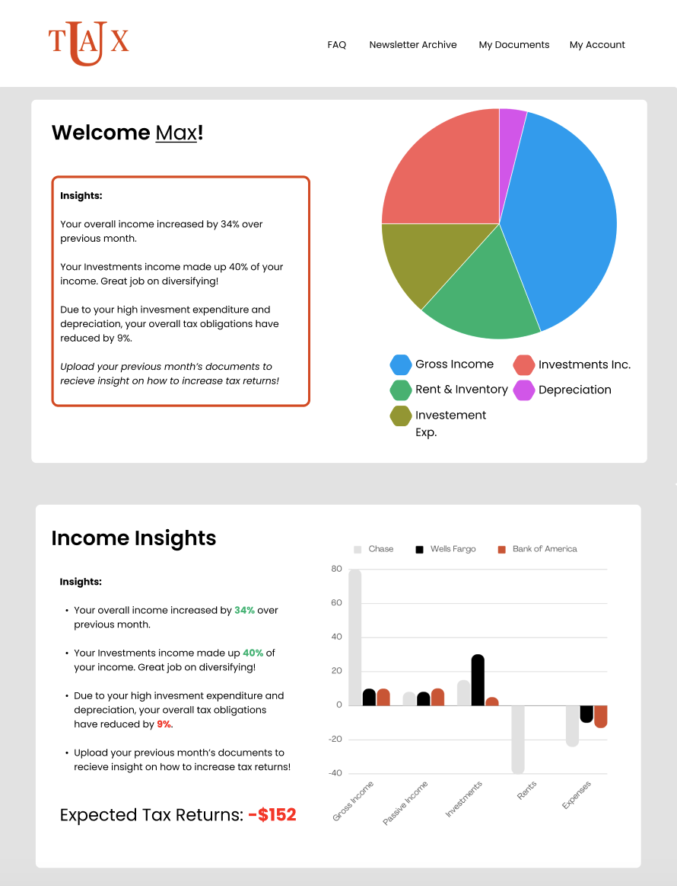
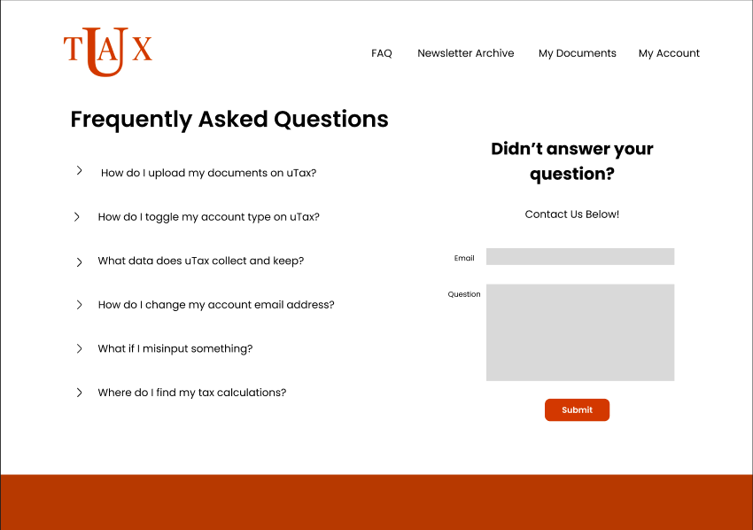
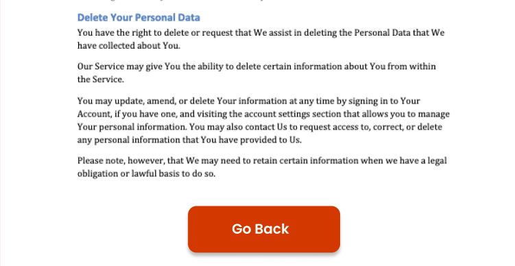
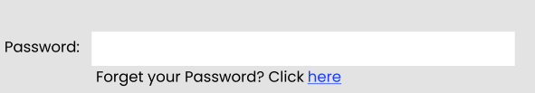
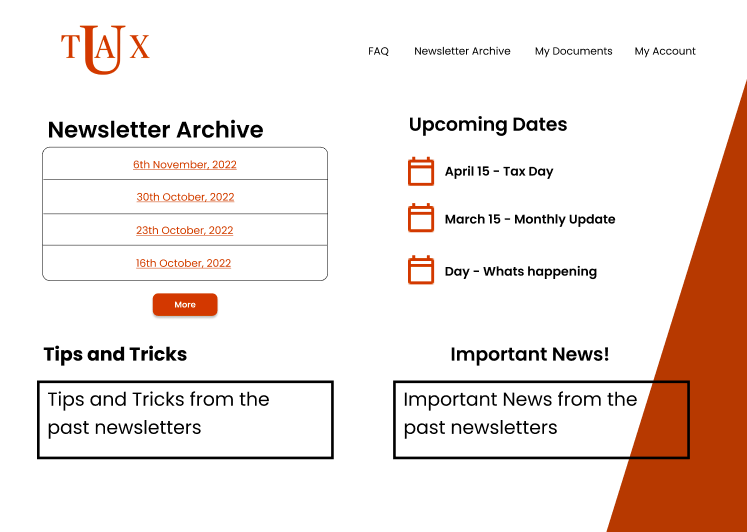
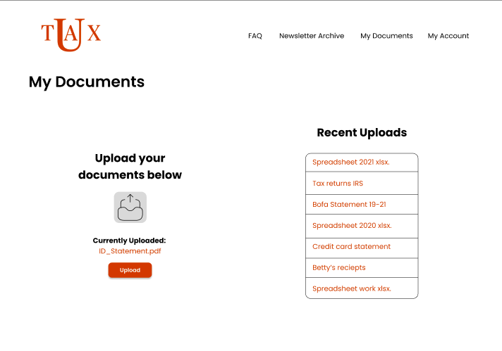
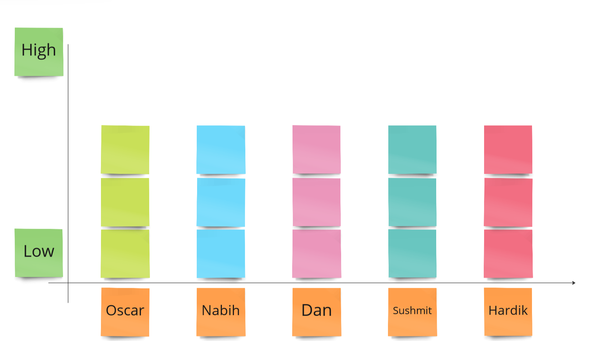

A place where U can learn to do your taxes
After receiving some useful feedback throught the Heuristic Evaluation process we further delved into areas of improvement for our prototype. A quick summary of changes made to overall increase the cohesiveness and functionality of the project can be seen below, with a more in-depth description below.
uTax is a taxing and financing website that serves small businesses in the United States. Rather than collecting personal data, our solution aims to provide
general tips and information about the process of filing for taxes. The main gap we identified among small business owners is that they fall in the space between
starting to pay taxes as a company, and large companies hiring accountants. uTax aims to teach our users how to navigate the process so everyone has the freedom
to file their own taxes.
Throughout the process, we interviewed several potential users and created multiple iterations to reach our final refinement. A big push in this effort has been
the heuristic feedback we received from a fellow team. Their suggestions and feedback have been taken into consideration and led to our final A/B testing.
The main points of feedback we got can be binned into the following three categories: Chart Usage, Information Cards, and ‘Learn More’ buttons. The main page we
were using to compare for our A/B testing was our user dashboard as shown below. The big feature that we wanted to get feedback on was our charts. In our first
iteration of the prototype, we used a pie chart because it made the most sense to us but had not experimented with our options. The example below highlights our
usage of a bar chart to convey a different yet equally important message. The feedback we got was that the pie chart was better suited for a discussion of money
simply because of the shape. It felt safer and easier for the users to think of all their money being shown in one place and feeling like it is a whole. Some
answers had additional layers too as people did see the importance the bar graph has for sharing important information, but still wanted some form of easy chart
at the introduction.

This feedback was helpful as the questions we asked based on that led to another suggestion for testers that we implemented in our final prototype. In order
to have the most meaningful experience with our user, we wanted to be welcoming and share the right type of information with them. The suggestion we got was
creating information cards that users can scroll through. The basis of the idea is that once we have started scrolling on a website, you have already finished
interacting with the first graph presented and decided to continue. This means that the user is connected and feels safe in some way thus being more open to see
more detailed information. We want to be mindful about not forcing this feature onto our users too and thus plan on running more tests to see when the information
is too much for them to make sense.
The final form of feedback we got was adding a “Learn More” function to the insights. We were hoping to work on this sort of functionality in the future however
for getting a prototype ready to get feedback, we decided to leave our users with insights. The learn more button would give the users an opportunity to not only
understand the insight they are getting but also links to websites where they can implement those changes with one click.
Having discussed some of our major changes, we also wanted to talk about final brush ups and polishes we made to our prototype. We began with fixing the weight and
sizes of fonts to build consistency throughout the design. We did this towards the end to ensure that any changes we wanted to make to it could be incorporated.
A page we revamped was the FAQ section. From our previous design we learned to make the FAQ page more simple and straightforward. Creating basic questions with users
having the ability to ask further questions if they would like. We made the contact us page a part of the FAQ section for a streamlined approach, with a clear submit
button for any queries.

To increase accessibility and easy navigation through the website, we added a back button in the terms and conditions, where prior there was no direct way to leave the
page. The back button also gives individuals the choice to not sign the terms and conditions and leave the site. And to increase user control and freedom we added a
forgot password button in the account section. These features are a usual part of our user interfaces today, but for us to be reminded of them we needed to get peer
review, showing their importance and the importance of user testing.


In the newsletter archive page we made a few cosmetic changes to be in line with our overall design. Keeping simple design principles in mind we also worked on the
formatting of the content and its logical flow. For example, we changed the dates to be chronological from being marked based on the most recent. From our previous
design we also removed the clipart we had for more professional icons that make the interface feel more polished and user friendly.

And finally, we worked on our My documents page. Being one of the only pages where users are directly interacting with the website, we wanted to ensure that the design
felt secure and useful. To this end, we reworked our upload design, creating a small upload icon with clear labels. We also added a currently uploaded info bar to remind
users of their previous actions and provide more information to the user to ensure they don’t upload multiple of the same documents.We also added the upload button in
orange as previously we only had an icon and were told that the action wasn’t as clear.

We also want to acknowledge that one form of feedback we did not implement was the idea of uploading personal information. We, as a team, still haven’t had in-depth
discussions about how we plan on handling personal files, especially about the finances of small businesses. Thus we will wait until we have an answer to the question
before adding the feature and functionality to our project.
As for the changes made, we focused on working on evaluation feedback that was critical to usability of the website. We worked on most of the suggestions,
foregoing some that required great detail and more information than available to us. Like, creating a detailed persona for our dashboard display. Our cosmetic
changes were also made with the intention of making users feel increased usability of the website.
